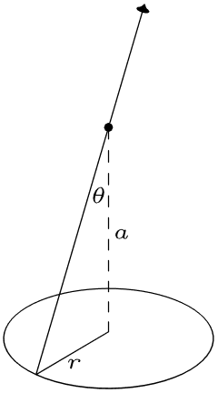

Electric Fields
Table of Contents
1. Introduction to Electrostatics
To begin our discussion of electric fields, we should first consider the study of electrostatics
Electrostatics is the study of charges that are not moving (the opposite of that is electrodynamics, but we'll get to that later).
One law upholds the entirety of electrostatics, and that law is known as Coulomb's Law.
1.1. Charges
Charges are the gateway to electricity and magnetism. To be able to play this game, you must have charge. In a way, charge can be seen as a physical property.
Negative charge is carried by electrons. Interestingly, this is the most basic unit of charge: this negative charge carried by electrons exactly equals the positive charge carried by protons. Neutrons do not carry charge — they are neutral. This also means that charge is quantized, as only basic units of charge can be added up.
This quantized charge is the charge in an electron, which is \(-e=1.602\times 10^{-19} \text{ C}\).
Charge is also conserved locally. Charge cannot be universally conserved, as this would violate special relativity.
1.2. Coulomb's Law
Now onto this great law known as Coulomb's Law. It basically states that the force experienced by a charged particle due to another charged particle is directly proportional to their charges and inversely proportional to their squared distance: \[ F_C=\frac{1}{4\pi\epsilon_0}\frac{q_1q_2}{r^2}\hat{r} \] Notice its similarities with the Universal Law of Gravitation.
2. Electric Fields
Electric fields are basically just a generalization of Coulomb's Law. We remove the actual physical charge from the law, and consider only a "test charge" — theorizing "what would happen" if a charge was actually there.
You can also think of it as putting a charge of 1 there to just test the "electric field". Thus, the electric field given by a charge \(q\) is just:
\[ E = \frac{1}{4\pi\epsilon_0} \frac{q}{r^2} \hat{r} \]
Notice that the second charge is nowhere to be seen. This is because we can now rewrite Coulomb's Law as:
\[ F_C = qE \]
Very convenient!
2.1. Electric Field Lines
Now, some genius thought of a method to visualize electric fields by drawing lines to represent the force vectors.
This is particularly ingenious because the density of the lines directly correlate to the relative intensity of the force. If we draw a sphere around the charge, the surface area of that sphere is \(4\pi r^2\). If we have \(n\) number of lines going through an area of \(4\pi r^2\), notice that as \(r\) increases the density falls off by \(\frac{1}{r^2}\), consistent with Coulomb's
2.2. Electric Field Due to an Infinite Line of Charge
Now we will attempt to calculate the electric field due to an infinite wire containing charge of density \(\lambda\) Coulombs per meter:
We shall take a tiny length of the wire, \(dx\), and consider the small difference of electric field \(d\vec{E}\) that it imparts on a charge above it.
Firstly, note that all the horizontal components will cancel due to symmetry. Another symmetry argument for this could be that for any argument you give me that it should tilt to the left, that same argument can be applied to say that it should tilt to the right — because on an infinite line of charge, the side to the left and the side to the right of the charge look exactly identical.
Thus, we need only to calculate the vertical component of this electric field. To do so, we can simply take the cosine of the angle it makes with the vertical and multiply.
Therefore, we have:
\[ dE = \frac{1}{4\pi \epsilon_0} \cdot \frac{\lambda dx}{a^2+x^2} \cdot \frac{a}{\sqrt{a^2+x^2}} \]
To find the total electric field, we can integrate this:
\[ E=\frac{\lambda a}{4\pi \epsilon_0}\int_{-\infty}^{\infty}{\frac{1}{(a^2+x^2)^\frac{3}{2}}dx} \]
We can now proceed by trig substitution. We substitute \(x=a\tan{\theta}\),
\[ E=\frac{\lambda a}{4\pi \epsilon_0} \int_{-\frac{\pi}{2}}^{\frac{\pi}{2}}{\frac{a\sec^2{\theta}d\theta}{a^3\sec^3{\theta}}} \]
Simplifying,
\[ E=\frac{\lambda}{4\pi \epsilon_0 a} \int_{-\frac{\pi}{2}}^{\frac{\pi}{2}}\frac{1}{\sec{\theta}}d\theta \]
Finally, we evaluate the integral from \(-\frac{\pi}{2}\) to \(\frac{\pi}{2}\),
\[ E=\frac{\lambda}{4\pi \epsilon_0 a} (1+1) = \frac{\lambda}{2\pi \epsilon_0 a} \]
And there we go.
There is something interesting about this. How does this field get weaker as distance, \(a\), increases? It falls over like \(\frac{1}{a}\), not like \(\frac{1}{a^2}\) as we would expect. This is because we are considering an infinite line of charge, so all of the forces that a charge would experience adds up to a field that falls like \(\frac{1}{a}\).
2.3. Electric Field Due to an Infinite Plane of Charge
Now we will consider the electric field due to an infinite sheet of positive charge, with charge density \(\sigma\) (notice the \(\sigma\) is used for Coulombs per area, and \(\lambda\) is used for Coulombs per length).
Now, notice by symmetry arguments similar to what we did for an infinite line, the electric field should be the same no matter how you translate the plane. Additionally, there should be no component that is not perpendicular to the plane.

Now we shall consider a tiny piece of area on the ring shown above \(dA\) due to \(dr\). The electric field that is represented by the arrow on the charge above the plane shall then be \(d\vec{E}\). By Coulomb's Law:
\[ dE = \frac{1}{4\pi \epsilon_0} \cdot \frac{\sigma dA}{(a^2+r^2)} \]
By symmetry, we only need to consider the component perpendicular to the plane:
\[ dE = \frac{1}{4\pi \epsilon_0} \cdot \frac{\sigma dA}{(a^2+r^2)} \cdot \frac{a}{(a^2+r^2)^\frac{1}{2}} \]
Now, we are only considering an area \(dA\) of the ring. What if we wanted the entire area, \(A\), of the ring? Well, we can just look at this as an infinitesimally small annulus, which can literally be approximated to be a rectangle of length circumference (\(2\pi r\)) and width \(dr\). Thus:
\[ dE = \frac{1}{4\pi \epsilon_0} \cdot \frac{2\pi r dr}{(a^2+r^2)^\frac{3}{2}} \cdot a\sigma \]
Now, we shall integrate this to obtain \(E\):
\[ E=\frac{a\sigma}{2\epsilon_0} \int_{0}^{\infty}{\frac{rdr}{(a^2+r^2)^\frac{3}{2}}} \]
Looking at this, we can perform the same trig substitution for \(r=a\tan{\theta}\) as we did above. However, we can also do it a different, arguably simpler way, by performing the substitution \(u=r^2\), which follows that \(\frac{dw}{2}=rdr\):
\[ E = \frac{a\sigma}{2\epsilon_0} \int_{0}^{\infty}{\frac{dw}{2(w+a^2)^\frac{3}{2}}} = \frac{a\sigma}{4\epsilon_0} \int_{0}^{\infty}{\frac{dw}{(w+a^2)^\frac{3}{2}}} \]
Now, this has become much easier to integrate:
\[ E = \frac{a\sigma}{4\epsilon_0} \cdot \left[\frac{-2}{(w+a^2)^\frac{1}{2}}\right]_{0}^{\infty} = \frac{a\sigma}{4\epsilon_0}\cdot\frac{2}{a} \]
Thus, our answer is:
\[ E = \frac{\sigma}{2\epsilon_0} \]
Now, this is very interesting. Notice that our \(a\) term cancelled out — it doesn't depend on distance! No matter how far you go from the infinite plane of charge, the effect will still be the exact same.
Intuitively, you could look at the perpendicular component and reach a viable argument. You realize that as a point moves farther away, the perpendicular component is larger relative to when it is closer, and so somehow this increase cancels out perfectly with the decrease in force due to the larger distance.
3. Conductors and Insulators
3.1. Conductors
Another important application of electric field is to conductors and insulators. Conductors conduct electricity by allowing free-moving electrons to pass through. This, through the perspective of charges and electric fields, brings up two interesting results.
Firstly, realize that by definition the electric field within a conductor is zero. To see why this is the case, imagine you subject the conductor to any electric field. Since by definition electrons, or charges, can move within the conductor, the outside electric field will cause polarization to occur. In other words, the charges within the conductor will keep moving until the electric field they produce exactly cancels the outside electric field it is subjected to.
This also implies that the electric charge within a conductor is zero. This is because all of the free charge will migrate to the edge of the conductor, leaving the field and charge within it zero.